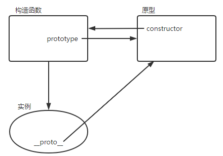
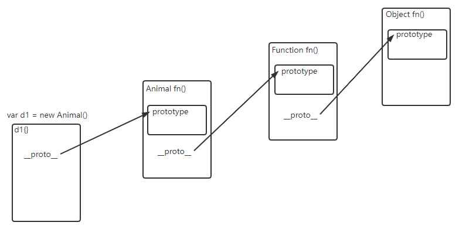

JavaScript对象
JavaScript 对象
对象
JS 中万物皆对象
字符串、布尔、数值也是通过对象方法创建的（通过原型链进行调用的），也可以调用对象原始方法 toString
1 | |
对象创建
字面量的方式
1 | |
构造函数的方式
1 | |
对象遍历
1 | |
能被 for…in 语句打印的属性称为可枚举属性（默认情况下，自定义属性都是可枚举的）
原型、原型链和 继承
显式原型 prototype
隐式原型__proto__
构造函数、原型和实例的关系
每个构造函数都有一个 prototype 指针指向其原型对象，原型对象都包含一个指向其构造函数的指针 constructor，而实例都包含一个指向原型对象的内部指针__proto__

原型链
在 JavaScript 中万物都是对象，对象和对象之间也有关系，并不是孤立存在的，所有的对象都直接或间接继承 Object。对象之间的继承关系，在 JavaScript 中是通过 prototype 对象指向父类对象，直到指向 Object 对象为止，这样就形成了一个原型指向的链条。

图中 d1 继承 Animal，Animal 继承 Function，Function 继承 Object。
子类添加或覆盖父类方法：
子类向父类中添加新的方法或覆盖父类的方法时，需要在原型赋值（
Dog.prototypr=new Animal()）之后进行
原型链的破坏
以字面量的方式创建原型方法会破话之前的原型链，相当于重写了原型链。
1 | |
在以上代码中，子类的原型在被赋值为 Animal 的实例后，又被一个对象字面量覆盖了。覆盖后的原型是一个 Object 的实例，而不再是 Animal 的实例。因此原型链断了，Dog 和 Animal 之间没有联系了。
检测对象是否在同一个原型链中
isPrototypeOf()：检测一个对象是否存在于另一个对象的原型链上（原型的指向）
1 | |
instanceof：检测一个对象是否是某个构造函数的实例 (new)
1 | |
字符串地区对应
toLocaleString() 返回对象的字符串表示，该字符串与执行环境的地区对应
1 | |
属性
数据属性
Object.defineProperty设置某一个对象的某一个属性的原始属性
1 | |
Object.definePropertys一次设置对象的多个属性的原始属性
1 | |
Object.getOwnPropertyDescriptor获取到属性的描述符- 总结 configurable：当
configurable设为false时，- 不可以通过 delete 去删除该属性从而重新定义属性；
- 不可以转化为访问器属性；
- configurable 和 enumerable 不可被修改；
- writable 可单向修改为 false，但不可以由 false 改为 true；
- value 是否可修改根据 writable 而定。
当 configurable 为 false 时，用 delete 删除该属性，在非严格模式下，不会报错，但操作被忽略，在严格模式下会报错；其他不可被修改的特性修改时会报错。
访问器属性
访问器属性不包含数据值，包含的是一对 get 和 set 方法，通过这两个方法来进行读写访问器属性操作。访问器属性不能直接定义，要通过 Object.defineProperty() 这个 Object 的静态方法来定义
访问器属性 configurable 默认为 false
1 | |
数据描述符 value、writable 和访问器描述符 get、set 不能同时设置
属性操作
属性访问
1 | |
属性删除
delete 属性访问表达式delete stu.namedelete 只会删除对象自有属性，不能删除继承属性
属性检测
in检测某属性是否是某对象的自有属性或者是继承属性
1 | |
hasOwnProperty()检测给定的属性是否是对象的自有属性，对于继承属性将返回 false
1 | |
propertyIsEnumerable()检测给定的属性是否是该对象的自有属性，并且该属性是可枚举的。通常由 JS 代码创建的属性都是可枚举的，但是可以使用特殊的方法改变可枚举性。
1 | |
- 自定义
hasPrototypeProperty()函数检测既定属性是否存在对象的原型中
1 | |
数据类型转换
Object 类型到 Boolean 类型
除了空引用 (null) 会转换为 false，其他都被转换为 true(空对象也为 true)
Object 类型转换为 String 类型
通过 toString() 和 String() 进行转换
valueOf 和 toString 的区别:
- 这两个方法都是对象的原始方法
- valueOf 为对象的原始值，通常不会显示的调用，通常有 JS 自动在后台进行调用
- toString 本身的一个作用是做字符串的转换，也会进行自动调用
- 如果重写了两个方法，在进行 运算 时，优先调用 valueOf；在进行 显示 时，优先调用 toStirng。如果只重写了一个方法，无论运算还是显示，都会调用该方法。
==拓展==：可以用 valueOf() 实现一个累加的实例，每次调用 obj 时 valueOf() 都会调用
（num 在 valueOf() 中被引用，所以不会被垃圾回收机制回收）。
1 | |
Object 类型转换为 Number 类型
- 如果只重写了
valueOf()或者toString()方法，则调用该方法，并将返回值用 Number() 转换。 - 如果两个方法都重写了，则调用
valueOf()，并将返回值用 Number() 转换。 - 如果两个方法都没有重写，则返回 NaN
值传递与引用传递 (址传递)
- 基本数据类型的变量：
可以直接操作保存在变量中的实际的值，参数传递的时候传递的是实际值 - 引用数据类型的变量：
不能直接操作对象的内存空间，实际上是在操作对象的引用，参数传递的时候传递的是引用地址
对象序列化
将对象转换为字符串的描述，解决对象在 io 中传递的问题
undefined 值不能序列化和反序列化
- 常规转换
obj.toString() - 转换为 json 字符串
JSON.stringify(obj)//只能序列化对象可枚举的自有属性
1 | |
- 转换为查询字符串